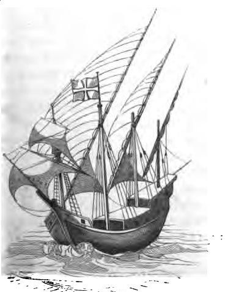

Каравелла в XII-XIV веках
До XV столетия карабеллами назывались маленькие беспалубные суда, почему, вероятно, биографы знаменитого мореплавателя впадали в грубую ошибку, заставив переплывать его Океан, так сказать, „на скорлупе"! Во времена Колумба, карабеллы уже не были таковыми.
Боголюбов, История корабля (Том I)
Вернемся к списку кораблей, которые на протяжении веков строились на генуэзских верфях. Следующим в нем идет каравелла.
Caravello-caravella (1159-1654)
Каравелла как тип корабля появилась на лигурийских верфях практически одновременно с караккой, с разницей в два года.
Мы посвятили каравелле в наших записках не один пост (можно посмотреть по тегу каравелла). Но надо признаться, что акцент при этом делали на каравелле как основном корабле эпохи Великих географических открытий.

Каравелла. Гравюра J. Devaulx. (Gal A., Glossaire nautique, 1848)
Поэтому и объектом наших исследований служила каравелла португальская, первые документальные сведения о которой появились в 1226 (?)–1255 гг.
Однако самое первое упоминание каравеллы находится не в бумагах Португалии, а в документах Генуи XII века, а именно в Картулярии Джованни Скрибы, самом древнем регистре нотариальных записей. Под 1159 годом в регистре находится запись, упоминающая каравеллу в следующем контексте. Некий судовладелец Соломон с двумя компаньонами намерен продать свой корабль (navis) в Александрию. Перед отплытием он нанимает за 8½ лир бригаду профессиональных конопатчиков для того, чтобы привести в порядок корпус этого корабля, а также состоявших при нем вспомогательных судов 'barcam et caravellum coopertum et gabias eius'. Нас, естественно, интересует caravellum coopertum. Каково назначение этого судна? То, что это не беспалубный барказ нам видно по определению coopertum, входящему в название судна. С античных времен так называли корабли, имеющие по меньшей мере одну палубу. А это значит, что судно это имело помещения для складирования грузов. Скорее всего, caravellum coopertum был разновидностью лихтера (по-итальянски chiatta), судна для обеспечения погрузо-разгрузочных работ крупного корабля, стоящего на рейде. Первая каравелла, вероятно, имела весла и небольшой парус. Однако это только гипотеза. Каких-либо характеристик судна в документах того времени не приводится.
Следующее по времени появление каравеллы (caravellum) в генуэзских документах датируется 1190 годом. О судне этого типа идет речь в бухгалтерских счетах на продажу кораблей. Судя по выставленной за него цене, caravellum остается судном небольших размеров.
Видимо, каравелла обладала неплохой мореходностью и высокой маневренностью, из-за чего привлекла внимание рыбаков. Не случайно, что 1255 году она появляется уже как рыболовецкое судно.
В литературе приводятся еще несколько случаев упоминания каравеллы в документах XIII века, однако достоверность их под вопросом. Например, в Codex Italiae diplomaticus, отрывок из которого приводит Дюканж, в записи с указанием на 1230 год есть упоминание некоего объекта caravala, а в Генуэзских анналах Каффаро – говорится о caravalle. Однако тщательная проверка обоих случаев позволяет с высокой долей уверенности утверждать, что в них содержится ошибка, и правильным будет читать оба термина как caravana (конвой). Подтверждение этому можно найти в последнем издании Annali Genovesi di Caffaro.
Таким образом, тринадцатый век остается темным пятном в истории генуэзской каравеллы.
Освещение развития и использования каравеллы не претерпело изменений и в XIV веке. Ни в документах, ни на изображениях той эпохи мы не находим ничего существенного, что можно было бы связать с каравеллами. Единственная запись, которая проливает хоть какой-то свет на этот тип корабля приведена в словаре Дюканжа. Датирована она 1307 годом, относится к Бискайскому региону, и в ней на чистом латинском языке утверждается, что для управления caravellus достаточно девяти человек:
« Item, quatuor Caravelli, quorum cuilibet sunt necessarii novem homines. »
Согласно исследованию морского историка Pedro Augusto de Azevedo, такая численность экипажа в ту эпоху была характерна для судов водоизмещением 18-20 тонн.
Следовательно, существенных изменений в размерах за истекшие сто лет каравелла не претерпела. Оценки специалистов дают величину ее водоизмещения в 20-30 тонн и отношение длины по килю к ширине как 5:1 (это очень высокое значение, учитывая что в более поздние времена эта величина редко превышала 3:1) и утверждают о наличии одной-двух мачт с латинским вооружением. Она продолжает использоваться в качестве рыболовного судна и для каботажных перевозок вдоль средиземноморского и атлантического побережий.
К пятнадцатому веку размеры каравеллы значительно выросли, ее начинают использовать для длительных плаваний, берут на вооружение и пираты, о чем мы можем судить по документу 1434 года, представляющем каравеллу с пиратским экипажем в каталонских водах. Каравелла превращается в основной корабль эпохи Великих географических открытий. Но об этом мы уже подробно рассказали в упомянутых выше постах.
Это всё, что мы можем сказать о каравеллах, которые строились на лигурийских верфях начиная с XII века. Тему продолжим в следующий раз.